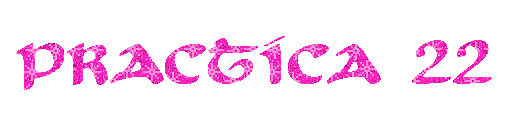

No esque este amargado me gusta el color rosa por motivos de estética y de una saturación cromática es un color difícil de usar bien pero llamativo a la vista, fuerte y revelador me encanta su color tranquilo pero a la vez saturado ya se me antojó un buen algodón de azúcar.